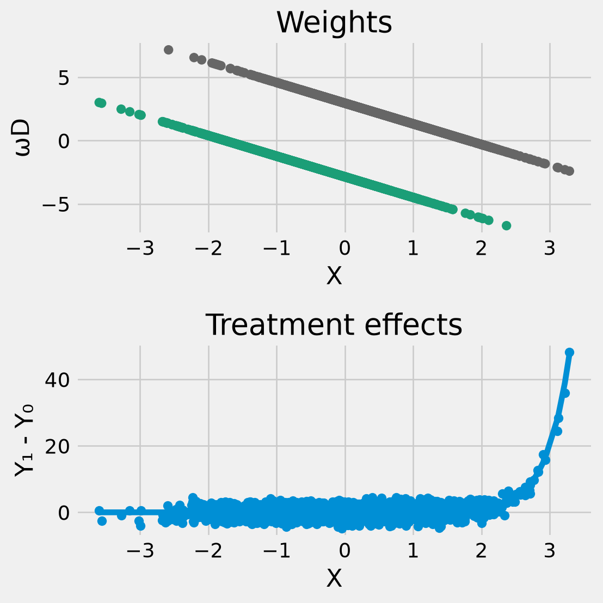
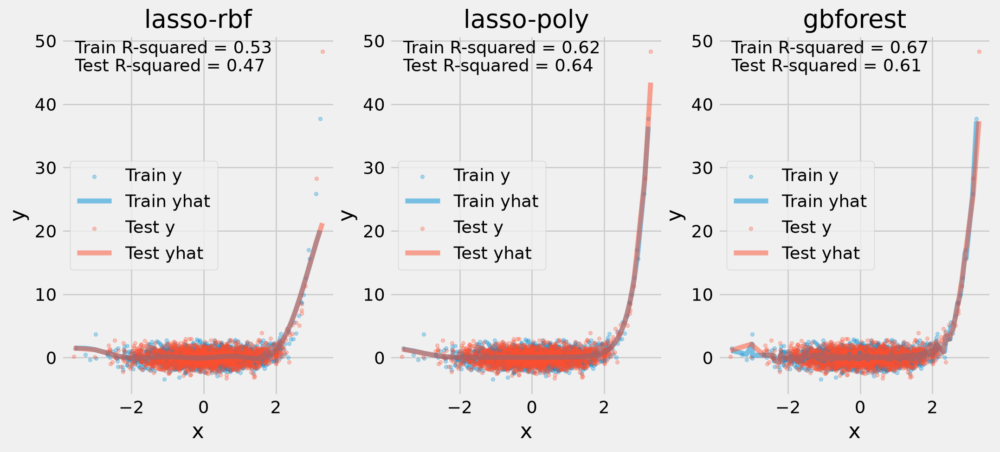
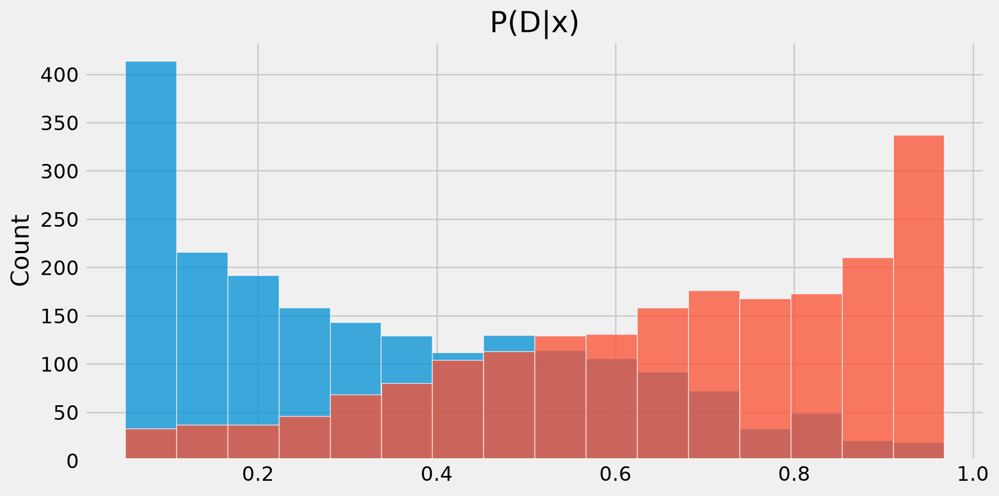
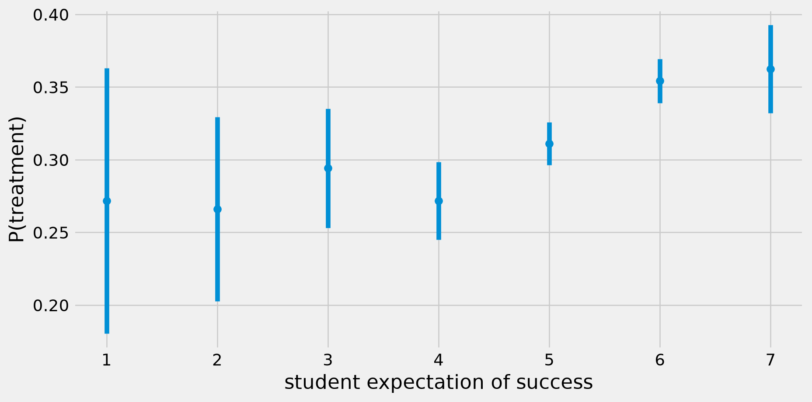
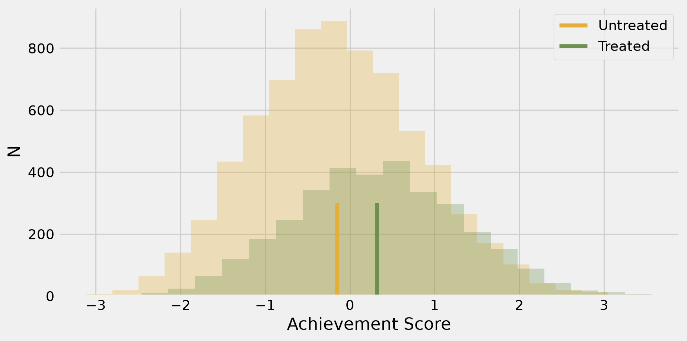
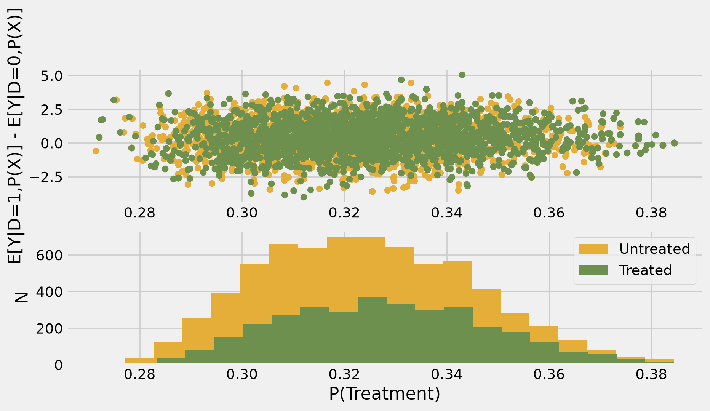

ECON526
University of British Columbia
\[ \def\Er{{\mathrm{E}}} \def\En{{\mathbb{En}}} \def\cov{{\mathrm{Cov}}} \def\var{{\mathrm{Var}}} \def\R{{\mathbb{R}}} \newcommand\norm[1]{\left\lVert#1\right\rVert} \def\rank{{\mathrm{rank}}} \newcommand{\inpr}{ \overset{p^*_{\scriptscriptstyle n}}{\longrightarrow}} \def\inprob{{\,{\buildrel p \over \rightarrow}\,}} \def\indist{\,{\buildrel d \over \rightarrow}\,} \DeclareMathOperator*{\plim}{plim} \DeclareMathOperator*{\argmin}{argmin} \]
Partial out (Frisch-Waugh-Lovell theorem) \[ \begin{align*} \hat{\alpha} = & \frac{\frac{1}{n} \sum_{i=1}^n Y_i (D_i - X_i'(X'X)^{-1}X'D)} {\frac{1}{n} \sum_{i=1}^n (D_i - X_i'(X'X)^{-1}X'D)^2} \\ \inprob & \Er\left[Y_i \underbrace{\frac{D_i - X_i'\pi}{\Er[(D_i - X_i'\pi)^2]}}_{\equiv \omega(D_i,X_i)}\right] \\ = & \Er\left[Y_{0,i} \omega(D_i,X_i)\right] + \Er\left[(Y_{1,i}-Y_{0,i}) \omega(D_i,X_i)D_i\right] \end{align*} \] where \(\pi = \argmin_{\tilde{\pi}} \Er[(D_i - X_i'\tilde{\pi})^2]\)
Note: \(\Er[\omega(D,X)] = 0\), \(\Er[D\omega(D,X)] = 1\)
\(\omega(D,X)\) is only orthogonal to linear functions of \(X\), so \(\Er[Y_{0,i}\omega(D_i,X_i)] \neq 0\) in general when \(\Er[Y(0)|X]\) is nonlinear
\(\plim \hat{\alpha} = \Er\left[Y_{0,i} \omega(D_i,X_i)\right] + \Er\left[(Y_{1,i}-Y_{0,i}) \omega(D_i,X_i)D_i\right]\)
What can be in the range of \(\omega(D,X) = \frac{D - X'\pi}{\Er[(D_i - X_i'\pi)^2]}\)?
np.random.seed(1234)
def simulate(n, pi=np.array([0,1])):
X = np.random.randn(n, len(pi))
X[:,0] = 1
P = np.clip(scipy.stats.norm.cdf(X @ pi), 0.05, 0.95)
D = 1*(np.random.rand(n) < P)
Ey0x = np.zeros(n)
Ey1x = np.exp(3*(X[:,1]-2))
y0 = Ey0x + np.random.randn(n)
y1 = Ey1x + np.random.randn(n)
y = D*y1 + (1-D)*y0
return(X,D,y,y0,y1, Ey0x, Ey1x, P)
X,D,y,y0,y1,Ey0x,Ey1x,P = simulate(4000)
pihat = np.linalg.solve(X.T @ X, X.T @ D)
w = D - X @ pihat
w = w/np.mean(w**2);-0.11952795827329016import matplotlib.cm as cm
fig, axes = plt.subplots(2, 1, figsize=(6, 6))
# Create a scatter plot for the first panel (left)
axes[0].scatter(X[:,1], w, c=D, cmap=cm.Dark2)
axes[0].set_xlabel("X")
axes[0].set_ylabel("ω(D, X)")
axes[0].set_title("Weights")
axes[1].scatter(X[:,1], y1-y0, label="TE")
axes[1].set_xlabel("X")
axes[1].set_ylabel("Y₁ - Y₀")
axes[1].set_title("Treatment effects")
sort_idx = np.argsort(X[:,1])
axes[1].plot(X[sort_idx,1], Ey1x[sort_idx]-Ey0x[sort_idx], label="E[y1-y0|x]")
# Display the plot
plt.tight_layout() # Ensure proper layout spacing
plt.show()
Estimator \[ \widehat{ATE}^{IPW} = \frac{1}{n} \sum_{i=1}^n \frac{Y_iD_i}{\hat{p}(X_i)} - \frac{Y_i(1-D_i)}{1-\hat{p}(X_i)} \] where \(\hat{p}(X)\) is some flexible estimator for \(P(D=1|X)\)
Downside:
from sklearn.ensemble import GradientBoostingRegressor, GradientBoostingClassifier
from sklearn.linear_model import LassoCV, LogisticRegressionCV, ElasticNetCV
from sklearn.preprocessing import PolynomialFeatures, StandardScaler
from sklearn.kernel_approximation import RBFSampler
from sklearn.model_selection import cross_val_score
from sklearn.pipeline import Pipeline
gamma = 0.5
nc = 100
models = [
Pipeline([('rbf',RBFSampler(gamma=gamma, random_state=1, n_components=nc)),
('lasso',LassoCV(max_iter=10_000, tol=1e-2, n_jobs=-1, selection='random',
alphas=10**np.linspace(-3,3,20)))]),
Pipeline([('poly',PolynomialFeatures(degree=10)),
('scale', StandardScaler()),
('lasso',LassoCV(max_iter=10_000, n_jobs=-1, selection='random', tol=1e-2,
alphas=10**np.linspace(-3,3,20)))]),
GradientBoostingRegressor(learning_rate=0.1, criterion="squared_error")]
for m in models :
print(m)
print(f"cross val R-squared {cross_val_score(m, X, y, cv=5).mean():.4} \n\n")Pipeline(steps=[('rbf', RBFSampler(gamma=0.5, random_state=1)),
('lasso',
LassoCV(alphas=array([1.00000000e-03, 2.06913808e-03, 4.28133240e-03, 8.85866790e-03,
1.83298071e-02, 3.79269019e-02, 7.84759970e-02, 1.62377674e-01,
3.35981829e-01, 6.95192796e-01, 1.43844989e+00, 2.97635144e+00,
6.15848211e+00, 1.27427499e+01, 2.63665090e+01, 5.45559478e+01,
1.12883789e+02, 2.33572147e+02, 4.83293024e+02, 1.00000000e+03]),
max_iter=10000, n_jobs=-1, selection='random',
tol=0.01))])
cross val R-squared 0.4365
Pipeline(steps=[('poly', PolynomialFeatures(degree=10)),
('scale', StandardScaler()),
('lasso',
LassoCV(alphas=array([1.00000000e-03, 2.06913808e-03, 4.28133240e-03, 8.85866790e-03,
1.83298071e-02, 3.79269019e-02, 7.84759970e-02, 1.62377674e-01,
3.35981829e-01, 6.95192796e-01, 1.43844989e+00, 2.97635144e+00,
6.15848211e+00, 1.27427499e+01, 2.63665090e+01, 5.45559478e+01,
1.12883789e+02, 2.33572147e+02, 4.83293024e+02, 1.00000000e+03]),
max_iter=10000, n_jobs=-1, selection='random',
tol=0.01))])
cross val R-squared 0.5393
GradientBoostingRegressor(criterion='squared_error')cross val R-squared 0.5006
from sklearn.model_selection import train_test_split
names = ["lasso-rbf", "lasso-poly", "gbforest"]
X_train, X_test,y_train, y_test = train_test_split(X, y, test_size=0.5, random_state=5498)
fig, ax = plt.subplots(1,3, figsize=(12,5))
ax = ax.flatten()
def r2(y,yhat) :
return(1 - np.mean((y-yhat)**2)/np.var(y))
otr = np.argsort(X_train[:,1])
ote = np.argsort(X_test[:,1])
for i, m in enumerate(models):
m.fit(X_train,y=y_train)
yhat = m.predict(X_train)
yhat_test = m.predict(X_test)
ax[i].scatter(X_train[:,1], y_train, alpha=0.3, label="Train y", color="C0", marker=".")
ax[i].plot(X_train[otr,1], yhat[otr], alpha=0.5, label="Train yhat", color="C0")
ax[i].scatter(X_test[:,1], y_test, alpha=0.3, label="Test y", color="C1", marker=".")
ax[i].plot(X_test[ote,1], yhat_test[ote], alpha=0.5, label="Test yhat", color="C1")
ax[i].set_xlabel("x")
ax[i].set_ylabel("y")
ax[i].set_title(names[i])
ax[i].annotate(f"Train R-squared = {r2(y_train, yhat):.2}", (0.05, 0.95), xycoords='axes fraction')
ax[i].annotate(f"Test R-squared = {r2(y_test, yhat_test):.2}", (0.05, 0.90), xycoords='axes fraction')
ax[i].legend()
plt.show()
gamma = 0.5
nc = 100
models = [
Pipeline([('rbf',RBFSampler(gamma=gamma, random_state=1, n_components=nc)),
('logistic',LogisticRegressionCV(n_jobs=-1, scoring='neg_log_loss'))]),
Pipeline([('poly',PolynomialFeatures(degree=10)),
('scale', StandardScaler()),
('logistic',LogisticRegressionCV(n_jobs=-1, scoring='neg_log_loss'))]),
GradientBoostingClassifier(learning_rate=0.1)]
for m in models :
print(m)
print(f"cross val log likelihood {cross_val_score(m, X, D, scoring='neg_log_loss', cv=5).mean():.4} \n\n")Pipeline(steps=[('rbf', RBFSampler(gamma=0.5, random_state=1)),
('logistic',
LogisticRegressionCV(n_jobs=-1, scoring='neg_log_loss'))])cross val log likelihood -0.5077
Pipeline(steps=[('poly', PolynomialFeatures(degree=10)),
('scale', StandardScaler()),
('logistic',
LogisticRegressionCV(n_jobs=-1, scoring='neg_log_loss'))])cross val log likelihood -0.5098
GradientBoostingClassifier()
cross val log likelihood -0.5184
import seaborn as sns
import matplotlib.pyplot as plt
import doubleml as dml
g = Pipeline([('poly',PolynomialFeatures(degree=10)),
('scale', StandardScaler()),
('lasso',LassoCV(max_iter=10_000, n_jobs=-1, selection='random', tol=1e-2,
alphas=10**np.linspace(-3,3,20)))])
m = Pipeline([('rbf',RBFSampler(gamma=gamma, random_state=1, n_components=nc)),
('logistic',LogisticRegressionCV(n_jobs=-1, scoring='neg_log_loss'))])
m.fit(X,D)
def plotp(model,X,d):
fig,ax=plt.subplots()
p = model.predict_proba(X)
sns.histplot(p[d==0,1], kde = False,
label = "Untreated", ax=ax)
sns.histplot(p[d==1,1], kde = False,
label = "Treated", ax=ax)
ax.set_title('P(D|x)')
return(fig)
fig=plotp(m, X, D)
| coef | std err | t | P>|t| | 2.5 % | 97.5 % | |
|---|---|---|---|---|---|---|
| 0 | -0.021168 | 0.030473 | -0.694655 | 0.487271 | -0.080893 | 0.038557 |
| 1 | 0.124972 | 0.041944 | 2.979520 | 0.002887 | 0.042764 | 0.207179 |
| coef | std err | t | P>|t| | 2.5 % | 97.5 % | |
|---|---|---|---|---|---|---|
| 1 vs 0 | 0.14614 | 0.052168 | 2.801322 | 0.005089 | 0.043892 | 0.248387 |
Infeasible estimator with true E[y1-y0|x] and p(x) = 0.15 with 95% CI = [0.057,0.24]
| schoolid | intervention | achievement_score | success_expect | ethnicity | gender | frst_in_family | school_urbanicity | school_mindset | school_achievement | school_ethnic_minority | school_poverty | school_size | |
|---|---|---|---|---|---|---|---|---|---|---|---|---|---|
| 9366 | 9 | 0 | 1.137192 | 6 | 1 | 1 | 1 | 4 | 1.324323 | -1.311438 | 1.930281 | 0.281143 | 0.362031 |
| 7810 | 27 | 0 | -0.554268 | 5 | 2 | 1 | 1 | 1 | 0.240267 | -0.785287 | 0.611807 | 0.612568 | -0.116284 |
| 7532 | 29 | 0 | -0.462576 | 6 | 1 | 1 | 1 | 1 | -0.373087 | 0.113096 | -0.833417 | -1.924778 | -1.147314 |
| 10381 | 1 | 0 | -0.402644 | 5 | 2 | 2 | 1 | 3 | 1.185986 | -1.129889 | 1.009875 | 1.005063 | -1.174702 |
| 1244 | 57 | 1 | 1.528680 | 6 | 4 | 1 | 1 | 2 | 0.097162 | -0.292353 | -1.030865 | -0.813799 | 0.184716 |
def std_error(x):
return np.std(x, ddof=1) / np.sqrt(len(x))
grouped = data.groupby('success_expect')['intervention'].agg(['mean', std_error])
grouped = grouped.reset_index()
fig, ax = plt.subplots()
plt.errorbar(grouped['success_expect'],grouped['mean'],yerr=1.96*grouped['std_error'],fmt="o")
ax.set_xlabel('student expectation of success')
ax.set_ylabel('P(treatment)')
plt.show()
================================================================================
coef std err z P>|z| [0.025 0.975]
--------------------------------------------------------------------------------
Intercept -0.1538 0.012 -13.289 0.000 -0.176 -0.131
intervention 0.4723 0.021 22.968 0.000 0.432 0.513
================================================================================================================================================================
coef std err z P>|z| [0.025 0.975]
--------------------------------------------------------------------------------
Intercept -0.1538 0.036 -4.275 0.000 -0.224 -0.083
intervention 0.4723 0.025 19.184 0.000 0.424 0.521
================================================================================fig,ax=plt.subplots()
plt.hist(data.query("intervention==0")["achievement_score"], bins=20, alpha=0.3, color="C2")
plt.hist(data.query("intervention==1")["achievement_score"], bins=20, alpha=0.3, color="C3")
plt.vlines(-0.1538, 0, 300, label="Untreated", color="C2")
plt.vlines(-0.1538+0.4723, 0, 300, label="Treated", color="C3")
ax.set_xlabel("Achievement Score")
ax.set_ylabel("N")
plt.legend()
plt.show();
ols = smf.ols("achievement_score ~ intervention + success_expect + ethnicity + gender + frst_in_family + school_urbanicity + school_mindset + school_achievement + school_ethnic_minority + school_poverty + school_size",data=data).fit(cov_type="cluster", cov_kwds={'groups': data['schoolid']})
print(ols.summary().tables[1])==========================================================================================
coef std err z P>|z| [0.025 0.975]
------------------------------------------------------------------------------------------
Intercept -1.7786 0.110 -16.214 0.000 -1.994 -1.564
intervention 0.3964 0.025 15.558 0.000 0.346 0.446
success_expect 0.3746 0.009 41.120 0.000 0.357 0.392
ethnicity 0.0043 0.003 1.639 0.101 -0.001 0.009
gender -0.2684 0.016 -16.299 0.000 -0.301 -0.236
frst_in_family -0.1310 0.019 -6.770 0.000 -0.169 -0.093
school_urbanicity 0.0573 0.036 1.613 0.107 -0.012 0.127
school_mindset -0.1484 0.044 -3.341 0.001 -0.235 -0.061
school_achievement -0.0253 0.055 -0.457 0.647 -0.134 0.083
school_ethnic_minority 0.1197 0.034 3.471 0.001 0.052 0.187
school_poverty -0.0154 0.054 -0.284 0.776 -0.122 0.091
school_size -0.0467 0.044 -1.060 0.289 -0.133 0.040
==========================================================================================lpm = smf.ols("intervention ~ success_expect + ethnicity + gender + frst_in_family + school_urbanicity + school_mindset + school_achievement + school_ethnic_minority + school_poverty + school_size",data=data).fit(cov_type="cluster", cov_kwds={'groups': data['schoolid']})
w = lpm.resid / np.var(lpm.resid)
print(np.mean(data.achievement_score*w))0.3964023603338951categ = ["ethnicity", "gender", "school_urbanicity","success_expect"]
cont = ["school_mindset", "school_achievement", "school_ethnic_minority", "school_poverty", "school_size"]
data_with_categ = pd.concat([
data.drop(columns=categ), # dataset without the categorical features
pd.get_dummies(data[categ], columns=categ, drop_first=False)# categorical features converted to dummies
], axis=1)
print(data_with_categ.shape)
D = 'intervention'
Y = 'achievement_score'
X = data_with_categ.columns.drop(['schoolid', D, Y])(10391, 38)from sklearn.linear_model import LogisticRegression, LogisticRegressionCV
from sklearn.neighbors import KNeighborsRegressor
import sklearn
def propensitymatching(D,Y,X,psmodel=LogisticRegressionCV(scoring='neg_log_loss'),neighbormodel=KNeighborsRegressor(n_neighbors=1,algorithm='auto',weights='uniform')):
pfit = psmodel.fit(X,D)
ps = pfit.predict_proba(X)[:,1]
ey1 = neighbormodel.fit(ps[D==1].reshape(-1,1),Y[D==1])
ey0 = sklearn.base.clone(neighbormodel).fit(ps[D==0].reshape(-1,1),Y[D==0])
tex = ey1.predict(ps.reshape(-1,1)) - ey0.predict(ps.reshape(-1,1))
ate = np.mean(tex)
return(ate, tex,ps)
ate,tex,ps=propensitymatching(data_with_categ[D],data_with_categ[Y],data_with_categ[X])
print(ate)0.4159743197051149fig, ax = plt.subplots(2,1)
treat = data.intervention
ax[0].scatter(ps[treat==0],tex[treat==0],color="C2")
ax[0].scatter(ps[treat==1],tex[treat==1],color="C3")
ax[1].hist(ps[treat==0],bins=20,color="C2",label="Untreated")
ax[1].hist(ps[treat==1],bins=20,color="C3",label="Treated")
ax[1].set_xlabel("P(Treatment)")
ax[1].set_ylabel("N")
ax[0].set_ylabel("E[Y|D=1,P(X)] - E[Y|D=0,P(X)]")
plt.legend()
plt.show()
from sklearn.ensemble import GradientBoostingRegressor, GradientBoostingClassifier
from sklearn.linear_model import LassoCV, LogisticRegressionCV, ElasticNetCV
from sklearn.preprocessing import PolynomialFeatures
def robustate(D,Y,X,psmodel=LogisticRegressionCV(scoring='neg_log_loss'),ymodel=LassoCV(), cluster=None):
pfit = psmodel.fit(X,D)
ps = pfit.predict_proba(X)[:,1]
ey1fit = ymodel.fit(X[D==1],Y[D==1])
ey0fit = sklearn.base.clone(ymodel).fit(X[D==0],Y[D==0])
ey1 = ey1fit.predict(X)
ey0 = ey0fit.predict(X)
ate_terms = ey1 - ey0 + D*(Y- ey1)/ps - (1-D)*(Y-ey0)/(1-ps)
ate = np.mean(ate_terms)
# check if cluster is None
if cluster is None :
ate_se = np.sqrt(np.var(ate_terms)/len(ate_terms))
else :
creg=smf.ols("y ~ 1", pd.DataFrame({"y" : ate_terms})).fit(cov_type="cluster", cov_kwds={'groups': cluster})
ate_se = np.sqrt(creg.cov_params().iloc[0,0])
return(ate, ate_se, ps, ey1,ey0)
ate,se,ps,ey1,ey0 = robustate(data_with_categ[D],data_with_categ[Y],data_with_categ[X],cluster=data_with_categ['schoolid'])
print(ate-1.96*se, ate, ate+1.96*se)0.3317146398974233 0.3832790165781085 0.43484339325879371
doubleml package| coef | std err | t | P>|t| | 2.5 % | 97.5 % | |
|---|---|---|---|---|---|---|
| intervention | 0.383696 | 0.026513 | 14.471938 | 1.822628e-47 | 0.331731 | 0.435661 |
doubleml (\(\approx 0.38\)) yields slightly smaller, consistent estimates.schoolid accounts for within-school correlation in both OLS and doubleml.Useful additional reading is chapters 10-12 of Facure (2022) and chapter 14 of Huntington-Klein (2021).1
Chapters 5 and 10 of Chernozhukov et al. (2024)
The representation of the estimate from a linear model as a weighted average is based on Borusyak and Jaravel (2018)
The growth mindset example is taken from Facure (2022)